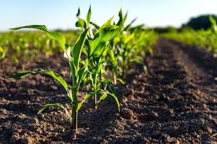
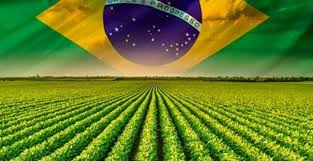
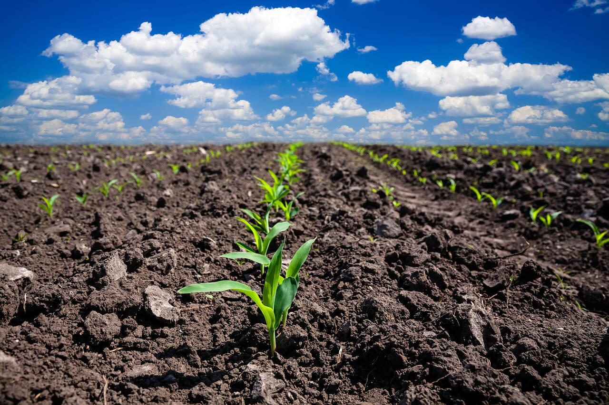
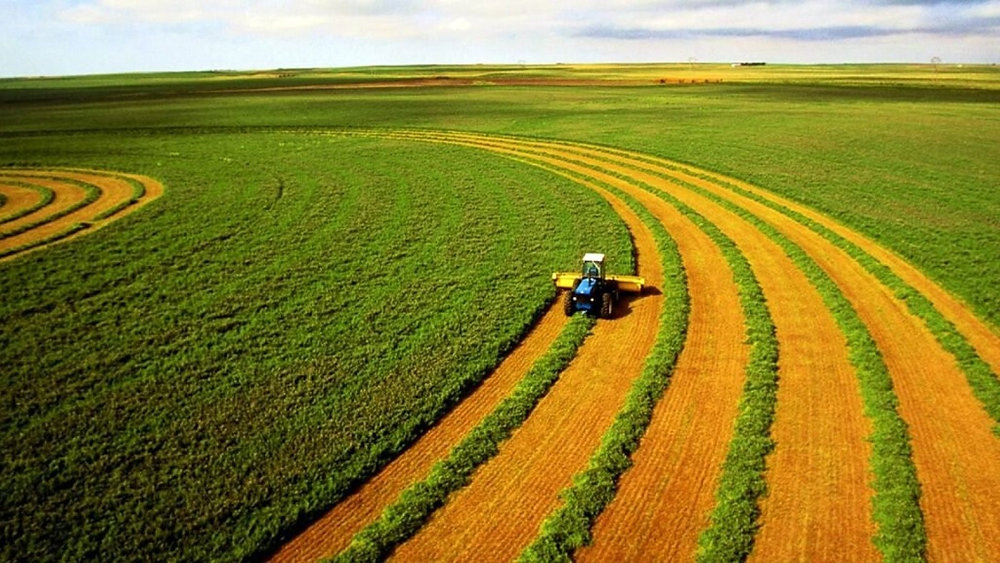
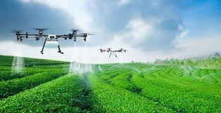

Equilíbrio entre produção e meio ambiente

A agricultura é essencial para produzir alimentos e sustentar a sociedade.

O Brasil é um dos maiores produtores agrícolas do mundo.

O uso responsável do solo ajuda a preservar a natureza.

Produzir e preservar é fundamental para o futuro.

A tecnologia também ajuda na agricultura sustentável.